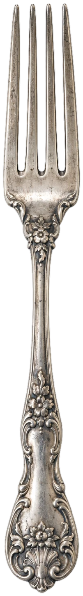
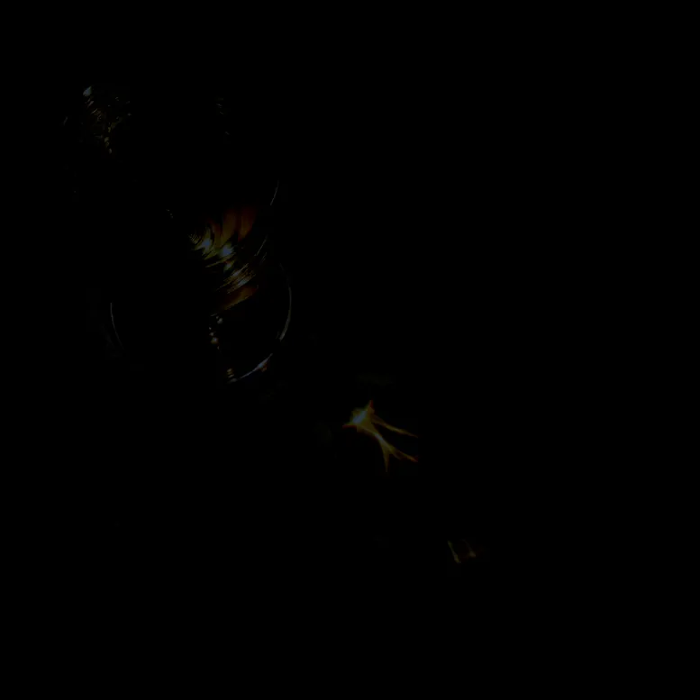

Family owned and operated since 1994, Maré brings the flavors of Portugal to Fall River. Enjoy fresh seafood, traditional dishes and a great wine list in a warm, friendly atmosphere.
View Menu (PDF)Order Online

| Monday | Closed |
| Tuesday - Thursday | 5pm - 10pm |
| Friday - Saturday | 5pm - 11pm |
| Sunday | 4pm - 9pm |
123 Main St, Fall River, MA · (508) 555-0174